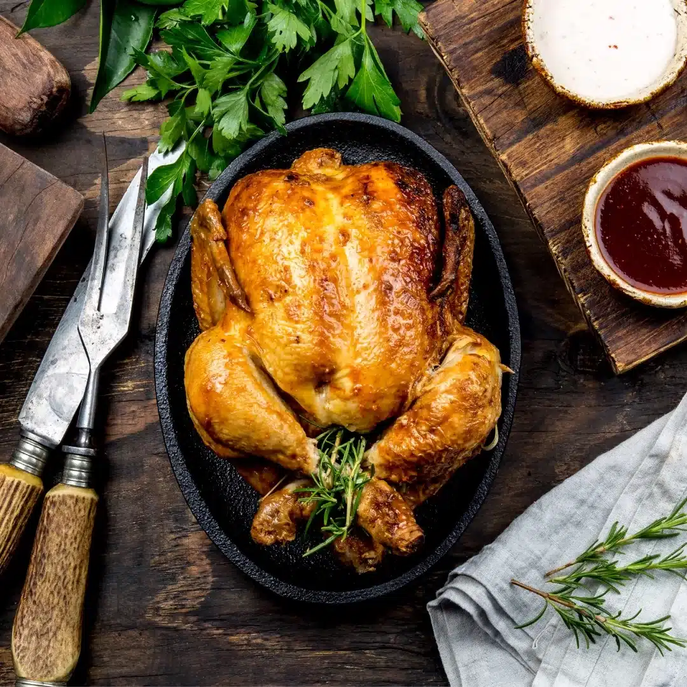

Roasted chicken (4 people)

Ingredients
- 1 whole chicken (about 1.5-2kg)
- 2 tbsp olive oil
- 1 lemon, halved
- 4 sprigs of rosemary
- 4 cloves garlic, crushed
- Salt and pepper to taste
- Optional: vegetables like potatoes, carrots, onions
Steps
- Preheat oven to 200°C.
- Season the chicken inside and out with salt and pepper.
- Rub the chicken with olive oil.
- Place the lemon halves, rosemary sprigs, and crushed garlic cloves inside the chicken cavity.
- Optional: Place chopped vegetables around the chicken in the roasting pan.
- Roast for 1 hour 15 minutes, or until the juices run clear when the thickest part of the thigh is pierced with a skewer.
- Let the chicken rest for 10-15 minutes before carving.